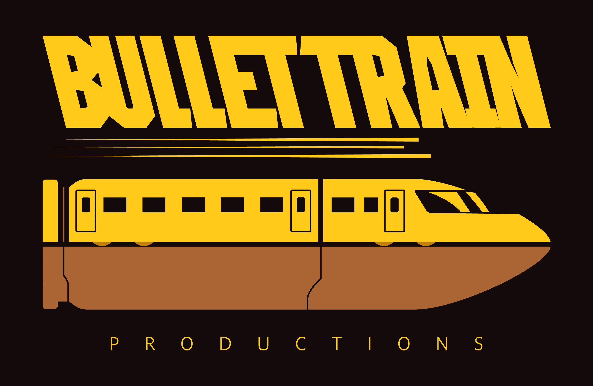
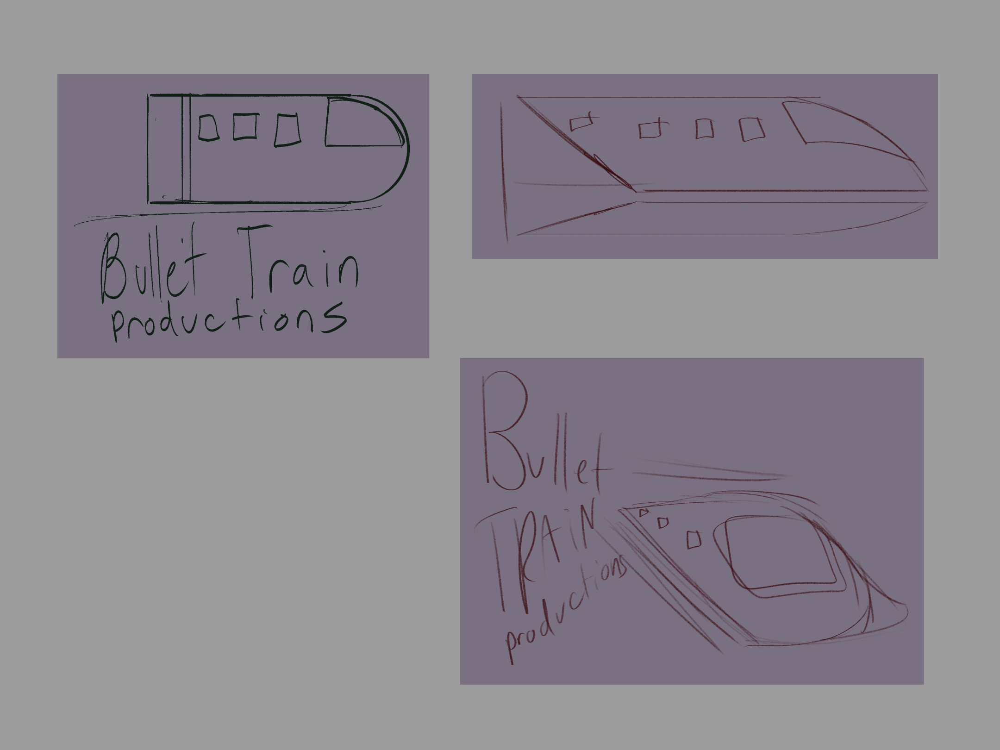
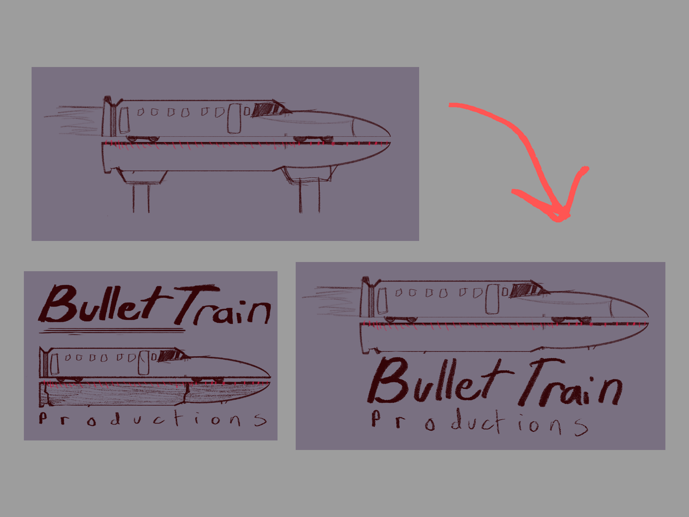
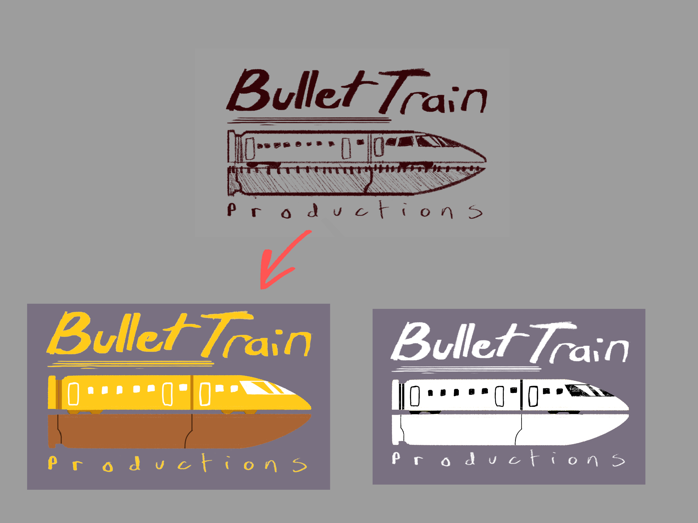
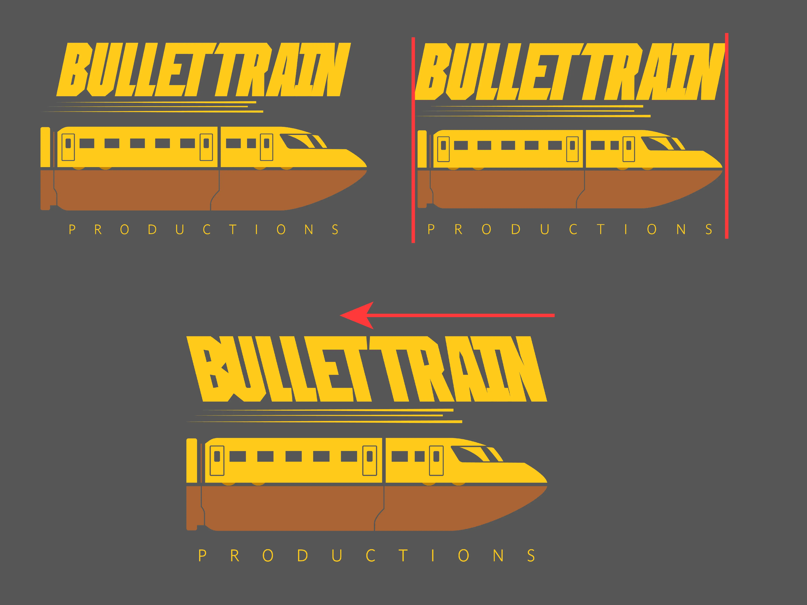
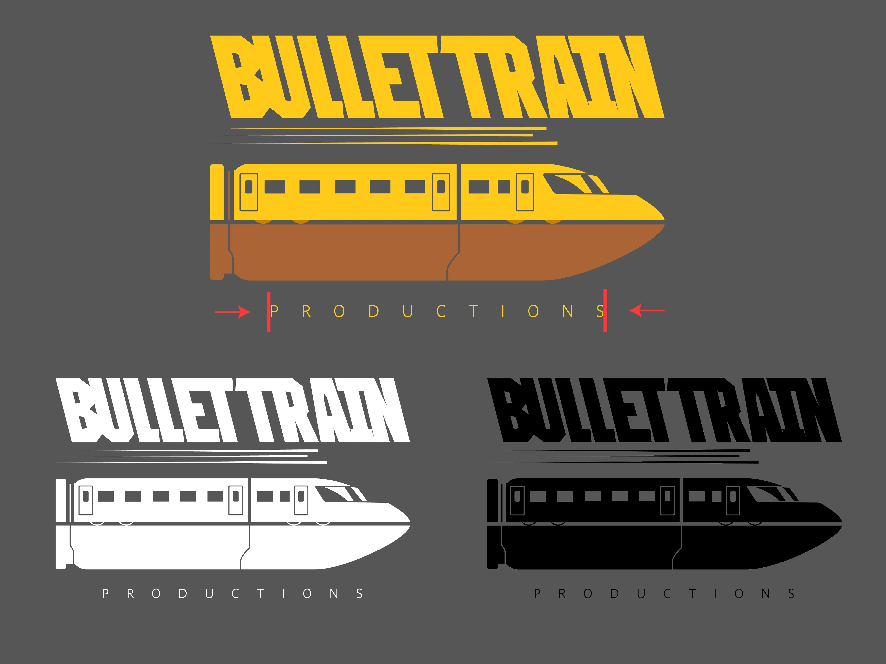

Tools: Procreate and Adobe Illustrator
Timeline: 3-4 days
Bullet Train Productions is a personal logo project created to explore typography-driven logo design while practiciting simplified design while maintaining visual energy and impact.
Bullet Train Productions is an upcoming independent film production company specializing in action-focused films. The company aims to produce energetic and passionate films that reflect the creative intentions of its filmmakers and cast while encouraging emerging creatives to create, learn, and grow, even with limited resources.
Bullet Train Productions is a fictional company created as a personal branding project.
I wanted to experiment with visual wordplay using the name “Bullet Train,” imagining it as an intense, action-focused film production company. My core concept was to combine a bullet and a bullet train into a single symbolic mark that felt fast, cinematic, and modern.

During sketching, I focused on creating a modern, minimal logo using limited shapes and design elements. Since wordplay was central to the concept, I explored cutting a bullet in half, turning the top into a bullet train and the bottom into train track bridge elements.

The initial bullet shape appeared too much like a jet, so I simplified it after researching actual bullet train exterior designs. I also experimented with more complex perspectives, but ultimately chose the simpler view in favor of clarity and scalability. The train and bridge were designed as strong, recognizable shapes so viewers could understand the symbol immediately, even at small sizes.

To reinforce wordplay in the business name, I chose warm yellow and copper-based hues to differentiate the elements while conveying the energy and intensity of the brand. The palette also provided contrast and personality while keeping the design adaptable for both digital and print use.
I intend for the interior shapes and lines of the train and bridge to remain transparent, using them to indicate doors, windows, and other structural elements while minimizing visual weight.
To test the logo’s recognition, I also created monochromatic versions of the design to ensure that it could stand on its own without color or typography.
After designing the initial symbol in Illustrator using the Pen Tool and repeatedly subtracting shapes based on the final sketch, I explored typefaces through Adobe Fonts, looking for typography that could communicate the brand's energy while complementing the emblem.
I wanted the main title to feel heavy and powerful, while the secondary text remained lighter to balance the composition. I selected Zuume Edge for the main title and Parisine Std Clair for the subtitle.
To avoid the main heading feeling generic, I customized the type by expanding the letterforms and trimming portions of the shapes to improve spacing and visual interest. This helped integrate the title with the symbol rather than presenting it as unmodified text.

To reinforce motion, I added speed lines beneath the title, echoing the feeling of the train rushing forward. I later resized the train and track bridge so they aligned better with both the main title and the subtitle for visual balance.
After reviewing the draft, I noticed the slant of the text conflicted with the direction of the train. Using the Shear tool, I adjusted the angle so that the typography better followed the train's movement and reinforced the overall sense of speed.
On a technical note, I learned to establish the desired transformation of letterforms before expanding the type, allowing for more efficient editing during the refinement stage.

Once the layout and typography were finalized, I tested the logo with monochromatic variations to evaluate its versatility. Aside from adjusting line weights on the wheels for greater clarity, the design remained recognizable with limited color, demonstrating that it could function effectively across different formats.
Although this was a personal project, it strengthened my understanding of simplified branding, symbol consistency, and the balance between illustration and typography. Working within a short timeline also challenged me to create a polished and expressive logo without overcomplicating its core concept.
This project reinforced how important it is to ensure that every design decision, including shape, color, type, and motion, supports the brand context and its overall visual identity.